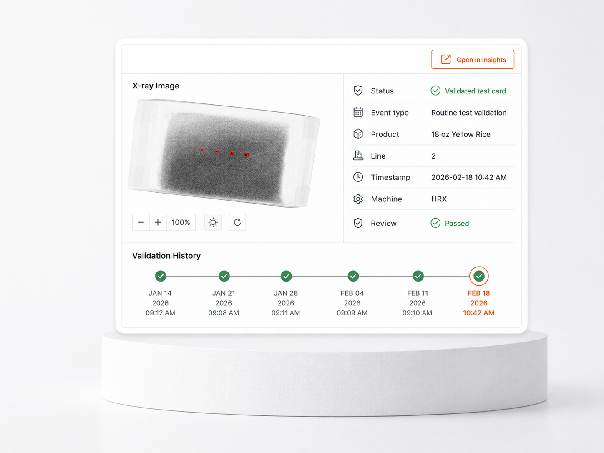
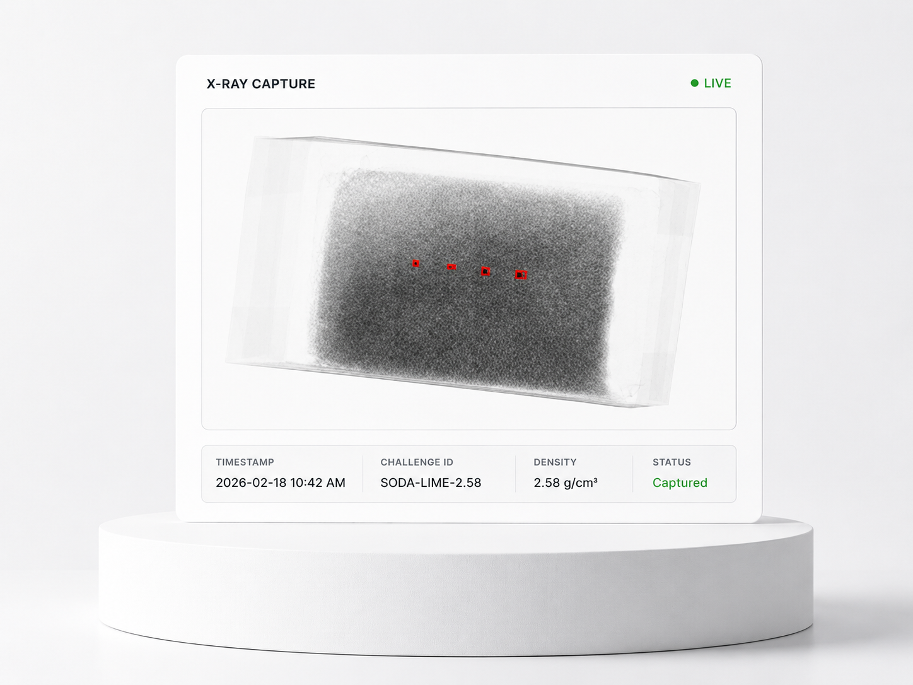

Audit and verification pressure
Challenge records, timestamps, and review status need to be easy to find when QA is preparing for internal review, customer questions, or audit support.
Application
When a reject, challenge, complaint, or suspect event needs review, GreyscaleAI helps QA teams find the image, event record, and production context behind it, then move into follow-up with evidence.

The QA problem
FSQA teams often need to answer what happened, when it happened, which product, lot, line, and machine were involved, and whether the event needs documentation, reinspection, supplier follow-up, or corrective action. A machine alarm or reject count is not enough context when the question is urgent.
Challenge records, timestamps, and review status need to be easy to find when QA is preparing for internal review, customer questions, or audit support.
Teams lose time when images, event context, and notes live in separate places or require someone to review only from the line.
Hold, release, rework, supplier follow-up, and corrective-action decisions are easier when reviewers can see the inspection image and event context together.
Why pass/fail is not enough
Conventional inspection systems are built to remove product from the line. They may not give QA an easy way to search past events, compare nearby records, document review status, or export evidence for investigation and audit support.
What GreyscaleAI sees
Each inspection record can connect the X-ray image with the production and machine context available for that line. The result is a searchable record set that helps QA understand what happened and decide what should happen next.
Available metadata depends on line integration, product setup, inspection goal, and system configuration.

Open the actual inspection image instead of relying only on counts, alarms, or shift notes.
Review event type, result, timestamp, machine, line, product, SKU, lot, and available AI decision context.
Track whether an event is open, reviewed, passed, documented, or moved into follow-up.
Capture challenge images and timestamps to support routine verification and audit preparation.
What Insights shows
Traceability is the buyer outcome. GreyscaleAI Insights is the software layer where authorized users search inspection history, open event records, review image evidence, document status, and export records for follow-up.
Filter by time, SKU, lot, line, machine, event type, result, or review status.
Open the X-ray image with available AI decision, machine metadata, timestamp, and product context.
Export evidence, document notes, open related context in Beyond Rejects, or route the issue into QA action.
Common uses
Use traceability and QA review content to show practical scenarios for food safety, quality, operations, and follow-up. Keep these as outcome cards, not software feature descriptions.
See what the system is rejecting during production, away from the machine.
Retrieve challenge images, timestamps, product context, line, machine, and result history for verification and audit support.
Review image evidence and event context for complaints, suspect events, corrective actions, or supplier follow-up.
Connect events to products, shifts, machines, lots, and review activity so the right team can decide what happens next.
Team workflows
Investigate complaints, suspect events, challenge records, corrective actions, and audit questions from a searchable set of inspection records.
Understand what was happening by line, product, shift, and machine when the issue occurred.
Use event context and machine metadata to support troubleshooting instead of starting from a vague alarm.
Review events across sites where Insights access, permissions, and data structures are configured.
Related proof
These examples should not make new performance claims. Use them to route visitors into relevant proof and adjacent applications.
Image-backed review helps teams distinguish true foreign-material risk from natural product variation.
Package-integrity questions often require image evidence and event context, not just a pass/fail result.
Quality defects can become reviewable inspection signals that QA and operations teams can track.
Related pages
See the Insights software workflow for searching, reviewing, documenting, and exporting inspection records.
Review broader context around elevated-risk events, not only the rejected unit.
Move from individual events to trends by line, SKU, shift, plant, or supplier context.
See the HRX inspection systems that capture the X-ray images and machine metadata.
Talk through product, package, line speed, target concerns, available metadata, and validation needs.
Next step
Talk through your product, package, line speed, traceability needs, and review workflow. GreyscaleAI can help determine what records, metadata, and Insights workflows make sense for your application.